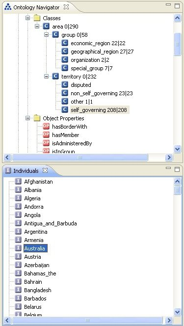

The Individuals panel displays individuals (often referred to as "instances") of the class currently selected in the Ontology Navigator.

In the screen shot the class "self governing country" is selectd and the Individuals panel lists all 208 instances of this class. Selecting an instance from the list will display its details in the Entity Properties panel on the right part of the screen.
New individuals of a class can be created either using the context menu of the class in the Ontology Navigator or by using the context menu of the Individuals panel and selecting "new individual" here. This option will only be accessible if a class is selected in the Ontology Navigator. The Individual Panel's context menu also allows to delete and rename individuals. Via drag-and-drop individuals can be moved or copied to other classes in their respective ontologies.